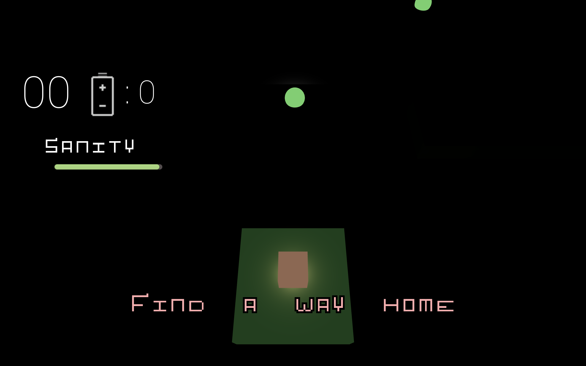

Go Home
About
The projet is created by Xiaoyan Bai (smallyan@umich.edu ) in two weeks. Go Home is a horror survival game that requires player to collect batteries and use light to find the safe and fastest way to go back to home. Players need to decide when to use the light and somehow remember the map. This game includes jump scare and horror sound effects.
Contributions
I designed the game by myself. I implemented the audio effect, designed the map, implemented the enemy system, and I implemented the UI system. All of my audio and sprite renders comes from OpenGameArt
Tips: Better experience with headphones